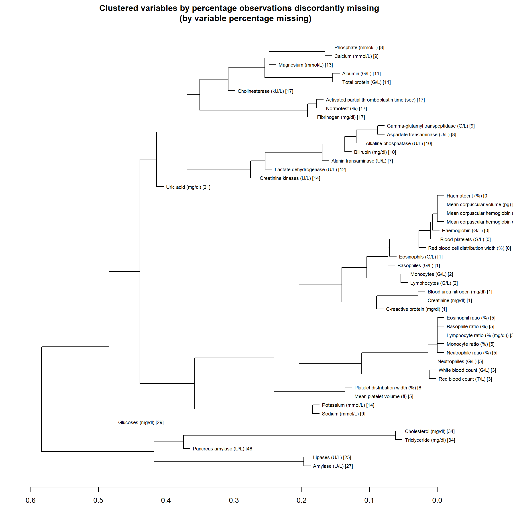

2 Results of IDA: Missing values
2.1 M1: Prevalence of missing values
Number and percentage of missingness for each predictor, sorted by descending missingness proportion.
2.1.1 Outcome and Structural variables
| Variable | Missing (count) | Missing (%) |
|---|---|---|
| BACTEREMIA | 0 | 0.00 |
| AGE | 0 | 0.00 |
| SEX | 0 | 0.00 |
2.1.2 Lab parameters
| Variable | Missing (count) | Missing (%) |
|---|---|---|
| Mean corpuscular volume (pg) | 42 | 0.29 |
| Haemoglobin (G/L) | 41 | 0.28 |
| Haematocrit (%) | 42 | 0.29 |
| Blood platelets (G/L) | 42 | 0.29 |
| Mean corpuscular hemoglobin (fl) | 42 | 0.29 |
| Mean corpuscular hemoglobin concentration (g/dl) | 42 | 0.29 |
| Red blood cell distribution width (%) | 56 | 0.38 |
| Mean platelet volume (fl) | 702 | 4.78 |
| Lymphocytes (G/L) | 262 | 1.78 |
| Monocytes (G/L) | 246 | 1.67 |
| Eosinophils (G/L) | 135 | 0.92 |
| Basophiles (G/L) | 146 | 0.99 |
| Normotest (%) | 2467 | 16.79 |
| Activated partial thromboplastin time (sec) | 2549 | 17.35 |
| Fibrinogen (mg/dl) | 2567 | 17.47 |
| Sodium (mmol/L) | 1282 | 8.73 |
| Potassium (mmol/L) | 2008 | 13.67 |
| Calcium (mmol/L) | 1276 | 8.69 |
| Phosphate (mmol/L) | 1242 | 8.45 |
| Magnesium (mmol/L) | 1869 | 12.72 |
| Creatinine (mg/dl) | 159 | 1.08 |
| Blood urea nitrogen (mg/dl) | 172 | 1.17 |
| Uric acid (mg/dl) | 3061 | 20.84 |
| Bilirubin (mg/dl) | 1441 | 9.81 |
| Total protein (G/L) | 1583 | 10.78 |
| Albumin (G/L) | 1676 | 11.41 |
| Amylase (U/L) | 3913 | 26.64 |
| Pancreas amylase (U/L) | 7114 | 48.42 |
| Lipases (U/L) | 3699 | 25.18 |
| Cholinesterase (kU/L) | 2447 | 16.66 |
| Alkaline phosphatase (U/L) | 1400 | 9.53 |
| Aspartate transaminase (U/L) | 1154 | 7.86 |
| Alanin transaminase (U/L) | 987 | 6.72 |
| Gamma-glutamyl transpeptidase (G/L) | 1262 | 8.59 |
| Lactate dehydrogenase (U/L) | 1714 | 11.67 |
| Creatinine kinases (U/L) | 2080 | 14.16 |
| Glucoses (mg/dl) | 4192 | 28.53 |
| Triclyceride (mg/dl) | 5061 | 34.45 |
| Cholesterol (mg/dl) | 5045 | 34.34 |
| C-reactive protein (mg/dl) | 155 | 1.06 |
| Basophile ratio (%) | 732 | 4.98 |
| Eosinophil ratio (%) | 732 | 4.98 |
| Lymphocyte ratio (% (mg/dl)) | 732 | 4.98 |
| Monocyte ratio (%) | 732 | 4.98 |
| Neutrophiles (G/L) | 728 | 4.96 |
| Neutrophile ratio (%) | 732 | 4.98 |
| Platelet distribution width (%) | 1102 | 7.50 |
| Red blood count (T/L) | 461 | 3.14 |
| White blood count (G/L) | 462 | 3.14 |
2.2 M2: Complete cases
Number of available complete cases (outcome and predictors):
| Set | Complete (count) | Complete (%) |
|---|---|---|
| Outcome | 14691 | 100.0 |
| Outcome and structural variables | 14691 | 100.0 |
| Outcome and key predictors only | 13793 | 93.9 |
| Outcome key predictors and predictors of medium importance | 9389 | 63.9 |
| Outcome and all predictors | 3979 | 27.1 |
2.3 ME1: Patterns of missing values
2.3.1 Complete cases by strata defined by structural variables
| Set | Complete (count) | Complete (%) |
|---|---|---|
| female - (50, 65] | ||
| All predictors | 1468 | 93.0 |
| Key predictors | 1468 | 93.0 |
| Medium importance predictors | 1075 | 68.1 |
| male - (65, 101] | ||
| All predictors | 2793 | 94.3 |
| Key predictors | 2793 | 94.3 |
| Medium importance predictors | 2014 | 68.0 |
| male - (16, 50] | ||
| All predictors | 2744 | 94.5 |
| Key predictors | 2744 | 94.5 |
| Medium importance predictors | 1993 | 68.7 |
| female - (16, 50] | ||
| All predictors | 2309 | 93.8 |
| Key predictors | 2309 | 93.8 |
| Medium importance predictors | 1656 | 67.3 |
| male - (50, 65] | ||
| All predictors | 2504 | 93.7 |
| Key predictors | 2504 | 93.7 |
| Medium importance predictors | 1862 | 69.7 |
| female - (65, 101] | ||
| All predictors | 1975 | 93.4 |
| Key predictors | 1975 | 93.4 |
| Medium importance predictors | 1389 | 65.7 |
2.3.2 Dendrogram of missingness indicators
The dendrogram depicts the results of a cluster analysis using the complete linkage method based on the percentage of discordant missing indicators. (This percentage was computed via the squared Euclidian distance of missingness indicators between predictors.) The vertical axis shows the distance between two clusters, which is given by the maximum distance between any element of the first and the second clusters. For example, if two clusters are merged at a height of 25 it means that in 25% of the observations the missingness indicators of the most discordant predictors contained in the two clusters are discordant.
The numbers in brackets are the percentages of missing observations for each predictor.

NULL